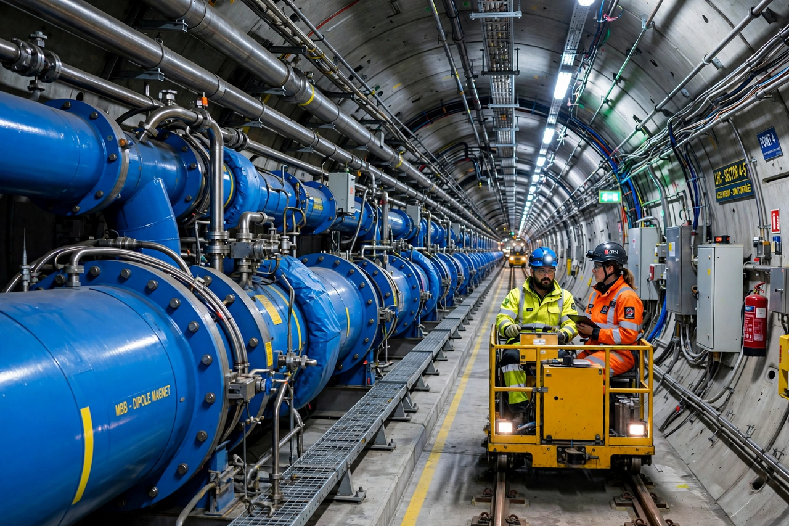

Particle accelerator

[Image: Photograph inside the LHC tunnel: a long row of blue superconducting dipole magnets]A particle accelerator is a machine that uses electromagnetic fields to propel charged particles to very high speeds and energies, and to contain them in well-defined beams. The two basic classes are electrostatic accelerators (Cockcroft–Walton, Van de Graaff — direct voltage) and radiofrequency accelerators (linear accelerators and circular machines — cyclotrons, synchrotrons), which reuse accelerating fields in stages or in rings.
From Rutherford's alpha particles and the first cyclotrons of Ernest Lawrence (1930s) to the Large Hadron Collider (27 km, 7 TeV per beam), accelerators have been particle physics' microscope — and have spilled into everyday life: synchrotron light sources image proteins and paintings, proton therapy treats cancer, electron beams sterilise equipment, and ion implantation dopes every computer chip. More than 30,000 accelerators operate worldwide, only a small fraction for fundamental research.
Why energy grew
Each generation of discoveries — from the muon and pion in cosmic rays to the J/ψ (1974), the W and Z (1983) and the Higgs boson (2012) — required higher energies or luminosities, driving the march from tabletop cyclotrons to multinational machines. The proposed Future Circular Collider (91 km at CERN) would reach 100 TeV, at a cost and scale that have reopened debate about the field's future directions (plasma wakefield acceleration promises far more compact machines).